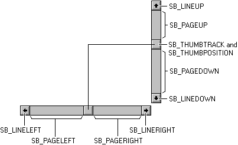

Win32编程基础之滚动条
Table of Contents
通过使用滚动条，窗口可以显示比它大的文档或图片，用户可以滚动用户区中的数据对象来看到对象超出窗口边界的部分。
如果窗口的用户区比窗口的边框要大，窗口应该使用滚动条。滚动条的方向决定了用户操作滚动条时滚动的方向。水平滚动条允许用户向左或向右滚动窗口内容。垂直滚动条允许用户向上或向下滚动窗口内容。
1 滚动条的各个部分
滚动条由一个两端带有箭头的阴影轴组成，在两个箭头之间还有一个滚动滑块（scroll box，有时也叫做滚动指 (thumb) ）。滚动条表示客户区中数据对象的整体长度或宽度；滚动滑块代表现在在客户区中对象的可见部分。当用户滚动数据对象来显示不同的部分时，滚动滑块的位置会发生改变。系统也会调整滚动滑块的大小使其能够表明数据对象的哪一部分是当前可见的。如果对象的大部分都是可见的，滚动滑块会占据轴的大部分，如果对象只有一小部分可见，滚动滑块只会占据轴的一小部分。
通过点击轴上的箭头按钮，点击滚动条轴的阴影部分或拖动滚动滑块，用户可以滚动窗口的内容。当用户点击箭头按钮时，应用会滚动内容一个单位（一般是一行或一列）。当用户点击阴影部分时，应用会滚动一个窗口的内容。用户拖动滚动滑块造成的滚动量取决于用户拖动的距离和滚动条的滚动范围。
2 标准滚动条和滚动条控件
滚动条的引入形式可以是标准滚动条或滚动条控件。标准滚动条处于窗口的非用户区。它随窗口创建时创建，并在窗口显示时被显示。标准滚动条的唯一目的是使用户能够生成滚动请求以查看客户区的整个内容。你可以通过在创建窗口时指定 WS_HSCROLL 和 WS_VSCROLL 来引入滚动条。 WS_HSCROLL 风格会创建一个在窗口客户区底部的水平滚动条。 WS_VSCROLL 风格会创建一个在客户区右边的垂直滚动条。系统尺寸 SM_CXHSCROLL 和 SM_CYHSCROLL 定义了标准水平滚动条的宽度和高度。SM_CXVSCROLL 和 SM_CYVSCROLL 定义了标准垂直滚动条的宽度和高度。标准滚动条是所属窗口的一部分，因此它们没有自己的窗口句柄。
滚动条控件是属于 SCROLLBAR 窗口类的控件窗口。滚动条控件的外观和功能与标准滚动条很像，但它是一个分离的窗口。作为分离的窗口，滚动条控件接收直接的输入焦点。与标准滚动条不同的是，它有内置的键盘接口。
在一个窗口中，滚动条控件你想用多少就用多少。当你创建一个滚动条控件时，你必须指定滚动条的大小和位置。然而，如果滚动条控件的窗口大小被重设了，当窗口大小改变时滚动条的大小也必须做出调整。
使用标准滚动条的好处是系统会为你创建并自动设置滚动条的大小和位置。然而，有时候标准滚动条又过于严格。例如，假设及想要将客户区分为四份并使用分离的滚动条来控制台每个象限的内容。你不能使用使用标准的滚动条，因为你只能为一个窗口创建一个标准滚动条。使用控件可以想加多少就加多少。
应用可以为除了滚动窗口之外的目的提供滚动条。例如，屏保应用可以提供一个滚动条来设置图像在屏幕上移动的速度。
滚动条控件有一些风格用于控制它的位置和朝向。在调用 CreateWindowEx 创建滚动条控件时，你可以指定你想要的风格。一些风格创建使用默认宽度和高度的控件。然而，你必须指定滚动条的 x 和 y 坐标以及滚动条的另一维度的尺寸值。
关于滚动条控件的风格，可见于 Scroll Bar Control Styles。
3 滚动滑块的位置和滚动范围
滚动滑块的位置使用整数表示；它和滚动条的最左或最上端有关，这取决于滚动条是水平还是垂直的。位置值必须在滚动范围的最小和最大值之间。例如，如果滚动条的范围是 0 到 100，那么位置 50 就是中间，其余位置沿滚动条均匀分布。初始范围取决于滚动条。标准滚动条的初始范围是 0 到 100；滚动条控件初始是空范围（最大最小值都是 0），除非你在创建时就指定一个范围。你可以在任何时候改变范围。你可以使用 SetScrollInfo 函数来设置范围值，并使用 GetScrollInfo 函数来检索当前的范围值。
应用一般会调整滚动范围为一个合适的整数，让滚动滑块位置到对应滚动的数据对象变得很容易。例如，如果应用必须显示 260 行的文本文件，但是窗口一次只能显示 16 行，那么垂直滚动条的范围可以设置为 1 到 244。如果滚动条在位置 244，最后一行（260行）会显示在窗口的底部。如果应用想要指定一个小于最小值或大于最大值的位置，范围的最小值或最大值会被使用。
你可以为滚动条设置一个页面大小值。 页面大小 表示在给定窗口大小下，可以放进拥有滚动条的窗口客户区域的数据单元的数量。例如，如果客户区可以放置 16 行文本，应用可以将页面大小设置为 16。系统使用这个页面大小和滚动范围以及滚动条长度来设置滚动滑块的尺寸。当包含控制条的窗口尺寸变化时，应用应该调用 SetScrollInfo 来设置页面大小。应用可以通过调用 GetScrollInfo 函数来检索页面大小。
要想在滚动范围盒数据对象之间建立方便的联系，应用必须在数据对象的大小发生变化时对范围进行调整。
用户移动滚动滑块时，滚动条会以滚动范围内的一个整数报告滚动滑块的位置。如果位置是最小值，滚动滑块的位置就是在垂直滚动条的顶端或水平滚动条的左端。如果位置是最大值，滚动滑块就在垂直滚动条的最底端或水平滚动条的最右端。
滚动条可以报告的最大值（也就是最大滚动范围）取决于页面大小。如果滚动条页面大小大于 1，最大滚动位置会小于最大范围值。你可以使用下面的公式来计算得到最大滚动位置：
MaxScrollPos = MaxRangeValue - (PageSize - 1)
应用必须移动滚动条中的滚动滑块。即使用户做出了滚动的请求，滚动条不会自动更新滚动滑块的位置。它会将请求发送到父窗口，由父窗口来滚动数据并更新滚动滑块的位置。应用可以使用 SetScrollInfo 函数更新滚动滑块的位置；不这样的话可以用 SetScrollPos 函数。因为它控制着滚动滑块的移动，应用可以以最适合的增量来控制滚动滑块的移动。
4 滚动条的可见性
系统会在指定了相同的最小范围盒最大范围时隐藏并禁用标准滚动条。如果你指定的页面大小完全包括了滚动条的范围，标准滚动条也会被系统隐藏并禁用。在客户区的内容不需要滚动条时，这是一种暂时隐藏滚动条的方法。在滚动条被隐藏时，没有必要通过滚动条发出滚动请求。当你将最小范围和最大范围设置为不相等时或页面大小不能包括全部滚动条范围时，系统会启用并显示滚动条。ShowScrollBar 函数可以用来显示或隐藏滚动条。它不会对滚动条的范围，页面大小或滚动滑块位置造成影响。
EnableScrollBar 函数可以用来禁用滚动条的一个或全部箭头。应用会将被禁用的箭头显示为灰色并不会对用户的输入进行响应。
5 滚动条请求
用户通过点击滚动条的各个部分来做出滚动条请求。系统向特定窗口发送 WM_HSCROLL 或 WM_VSCROLL 形式的消息。水平滚动条发送 WM_HSCROLL 消息；垂直滚动条发送 WM_VSCROLL 消息。每个消息都包括了一个请求码，它对应于用户对滚动条的动作，滚动条的句柄（仅指滚动条控件），以及在某些情况下的滚动滑块位置。
下面的图显示了在点击滚动条的各部分时生成的请求码。

SB_ 值指定了用户的所做的动作。应用会检验随 WM_HSCROLL 和 WM_VSCROLL 而来的消息码并执行合适的滚动操作。下表展示了请求、行为和应用的响应。
- SB_LINEUP，用户点击顶部的箭头，减少滚动滑块位置并向上滚动一个单位
- SB_LINEDOWN，用户点击底部箭头，增加滚动滑块位置并向下滚动一个单位
- SB_LINELEFT，用户点击左边箭头，减少滚动滑块位置并向左滚动一个单位
- SB_LINERIGHT，用户点击右边箭头，增加滚动滑块位置并向右滚动一个单位
- SB_PAGEUP，用户点击滚动条上部阴影，减少滚动滑块位置一个页面单位并向上滚动一个页面单位
- SB_PAGEDOWN，用户点击滚动条下部阴影，增加滚动滑块位置一个页面单位并向下滚动一个页面单位
- SB_PAGELEFT，用户点击滚动条左部阴影，减少滚动滑块位置一个页面单位并向左滚动一个页面单位
- SB_PAGERIGHT，用户点击滚动条右部阴影，增加滚动滑块位置一个页面单位并向右滚动一个页面单位
- SB_THUMBPOSITION，用户在拖拽滚动滑块后释放，将滚动滑块位置设置为消息中的值并滚动与滚动滑块移动距离相同的距离
- SB_THUMBTRACK，用户拖拽滚动滑块，将滚动滑块位置设置为消息中的值并快速滚动与滚动滑块移动距离相同的距离。不能快速绘制数据的应用必须在移动滚动滑块盒绘制数据前等待 SB_THUMBPOSITION 请求
- SB_ENDSCROLL，用户在按下箭头或阴影部分后的释放，不需要做出响应
在用户点击并拖拽滚动滑块时会出现 SB_THUMBPOSITION 和 SB_THUMBTRACK 请求。应用应该处理两者中的一种。
SB_THUMBPOSITION 请求码在用户释放点击的滚动滑块后产生。处理该消息的应用在用户拖拽滚动滑块到理想位置并释放鼠标按钮后开始执行滚动操作。
SB_THUMBTRACK 请求码在用户拖拽滚动条时产生。如果应用处理 SB_THUMBTRACK 消息，它可以在用户拖拽滚动滑块时滚动窗口。然而，滚动条可以在短时间内生成许多的 SB_THUMBTRACK 请求，因此应用应该仅在能够快速重绘窗口内容时处理这些请求码。
6 滚动条的键盘接口
滚动条控件提供了内建的键盘接口让用户能够使用键盘来发出滚动请求；标准键盘没有这么做。当滚动条控件拥有键盘焦点时且用户按下方向键时，它会发送 WM_HSCROLL 和 WM_VSCROLL 消息到它的父窗口。请求码随用户按下的方向键消息一起发送。以下是方向键及其对应的请求码。
- DOWN，SB_LINEDOWN 或 SB_LINERIGHT
- END，SB_BOTTOM
- HOME，SB_TOP
- LEFT，SB_LINEUP 或 SB_LINELEFT
- PGDN，SB_PAGEDOWN 或 SB_PAGERIGHT
- PGUP，SB_PAGEUP 或 SB_PAGERIGHT
- RIGHT，SB_LINEDOWN 或 SB_LINERIGHT
- UP，SB_LINEUP 或 SB_LINELEFT
注意，滚动条控件键盘接口会发送 SB_TOP 和 SB_BOTTOM 请求码。SB_TOP 请求码表明用户已经到达了滚动条范围的顶。应用向下滚动窗口内容使得顶部的数据对象可见。SB_BOTTOM 请求码表示用户到达了滚动条范围的底。如果应用处理 SB_BOTTOM 请求码，它应向上滚动窗口内容使得底部的数据对象可见。还有 SB_LEFT 和 SB_RIGHT，它们的功能与上面两个很相似。
如果你想为标准滚动条加上键盘接口，你可以通过在你的窗口过程中处理 WM_KEYDOWN 消息并进行合适的滚动操作。关于如何为滚动条创建键盘接口，可参考 Creating a Keyboard Interface for a Standard Scroll Bar
7 滚动客户区
滚动客户区窗口内容的最简单方法是擦除并重绘它。这种方法适合与 SB_PAGEUP，SB_PAGEDOWN 和 SB_TOP 请求码，它们一般会需要全新的内容。
对一些请求码，比如 SB_LINEUP 和 SB_LINEDOWN，并不是所有的内容都需要擦除，因为在滚动后一些内容仍然需要保持可见。ScrollWindowEx 函数会保留客户区内容的一部分，并将保留的部分移动一个指定的位置，随后为绘制新信息准备剩余的部分。 ScrollWindowEx 使用 BitBlt 函数来将指定的数据对象移动到客户区内的新地点。任何没有被覆盖的客户区（没有保留的部分）会被设为不合法的（invalidated）并擦除，在下一个 WM_PAINT 消息出现时进行绘制。
ScrollWindowEx 函数可以用于从滚动操作中排除一部分客户区。这样使得固定位置的东西不会在客户区内移动，比如子窗口。它会把接收新信息的客户区部分自动设置为不合法的，这样应用不必计算它的裁剪区域。关于什么是裁剪区域，可参考 Clipping。
通常应用程序以与滚动条指示相反的方向滚动窗口内容。例如，当用户点击滚动条下部阴影时，应用会向上滚动对象来在窗口下面留空。
你也可以使用 ScrollDC 函数来给滚动矩形区域。
8 滚动条的尺寸和颜色
系统定义的颜色值 COLOR_SCROLLBAR 控制了滚动条阴影的颜色。使用 GetSysColor 函数来得到滚动条阴影颜色，使用 SetSysColors 函数来设置滚动条阴影颜色。注意，对颜色的改变会影响系统中所有的滚动条。
你可以调用 GetSystemMetrics 函数来得到系统用在滚动条上的位图的尺寸。下面是系统与滚动条关联的系统尺寸值。
- SM_CXHSCROLL，水平滚动条的箭头位图宽度
- SM_CXHTHUMB，水平滚动条中滚动滑块的宽度
- SM_CXVSCROLL，垂直滚动条箭头位图的宽度
- SM_CYHSCROLL，水平滚动条的箭头位图高度
- SM_CYVSCROLL，垂直滚动条的箭头位图高度
- SM_CYVTHUMB，垂直滚动条的滚动滑块的高度
9 代码示例
微软的文档中给出了使用滚动条的例子，Using Scroll Bars。这里举一个使用标准滚动条和滚动条控件的玩具例子。
除了上文中的 GetScrollInfo 和 SetScrollInfo 函数，还有四个老式的滚动条函数，它们是 GetScrollPos，SetScrollPos，GetScrollRange 和 SetScrollRange。它们分别负责对滚动条的位置和范围进行获取和设置。新的函数 GetScrollInfo 和 SetScrollInfo 可以控制控制盒的大小。
GetScrollInfo 和 SetScrollInfo 的函数原型如下：
BOOL GetScrollInfo( HWND hwnd, int nBar, LPSCROLLINFO lpsi ); int SetScrollInfo( HWND hwnd, int nBar, LPCSCROLLINFO lpsi, BOOL redraw );
hwnd 参数是一个滚动条控件的窗口句柄，或使用标准滚动条的窗口的句柄。
nBar 是滚动条的类型，它可以是以下三个值。
- SB_CTL，表示滚动条控件， hwnd 参数必须是滚动条控件的句柄
- SB_HORZ，标准水平滚动条
- SB_VERT，标准垂直滚动条
lpsi 是指向 SCROLLINFO 结构的指针。它的声明如下所示：
typedef struct tagSCROLLINFO { UINT cbSize; UINT fMask; int nMin; int nMax; UINT nPage; int nPos; int nTrackPos; } SCROLLINFO, *LPSCROLLINFO;
cbsize 是结构的大小，以字节为单位。调用者必须将它设置为 sizeof(SCROLLINFO)。
fmask 指定是获取滚动条信息还是设置滚动条。它可以是以下值的组合：
- SIF_ALL，组合了 SIF_PAGE，SIF_POS，SIF_RANGE 和 SIF_TRACKPOS
- SIF_DISABLENOSCROLL，如果滚动条的新参数使得滚动条变得不必要了，该参数会使得滚动条被禁用而不是去除。仅当设置滚动条时使用该值
- SIF_PAGE， npage 成员包含比例滚动条的页面大小
- SIF_POS， nPos 成员包含滚动条的位置，在用户拖拽滚动条时它不会变化
- SIF_RANGE， nMin 和 nMax 成员包含滚动范围的最小值和最大值
- SIF_TRACKPOS， nTrackPos 成员包含用户拖拽滚动滑块时滚动滑块的当前位置
nMin 指定滚动位置的最小值
nMax 指定滚动位置的最大值
nPage 指定页面大小。滚动条使用这个值来确定合适大小的比例滚动滑块
nPos 指定滚动滑块的位置
nTrackPos 指定用户拖拽滚动滑块时的瞬时位置。应用可以在处理 SB_THUMBTRACK 请求码时检索该值。应用不能设置这个瞬时值， SetScrollInfo 会忽略这个成员。
SetScrollInfo 比 GetScrollInfo 多出一个参数，那就是 redraw 。它指定滚动条是否在滚动条改变后重绘滚动条。如果参数值为 TRUE ，滚动条会被重绘，否则不会。
再来看看 WM_VSCROLL 消息。
wParam 参数的 HIWORD 在 LOWORD 是 SB_THUMBPOSITION 或 SB_THUMBTRACK 时是当前滚动滑块的位置。否则，这个字不使用。
LOWORD 指定了用户的滚动请求，也就是请求码。
lParam 参数在发送消息的是滚动条控件时是控件的句柄。如果消息由标准滚动条发送，该参数是 NULL 。
以下的代码中创建了 6 个滚动条控件和一个标准滚动条，它们都是垂直滚动条。滚动条的底都在用户区的最上方，它们的长度呈线性递增。移动一个滚动条的滑块会对所有的滑块造成影响，使得它们协同运动。
创建主窗口时需要在 CreateWindow 中指定 WS_VSCROLL 标志。
HWND hWnd = CreateWindowW(szWindowClass, szTitle, WS_OVERLAPPEDWINDOW | WS_VSCROLL, CW_USEDEFAULT, 0, CW_USEDEFAULT, 0, nullptr, nullptr, hInstance, nullptr);
以下部分是窗口过程，它使用了 GetScrollPos 和 SetScrollPos 函数来获取和设置滚动条的状态。
LRESULT CALLBACK WndProc(HWND hWnd, UINT message, WPARAM wParam, LPARAM lParam) { static HWND hScroll[6]; static int cxSize, cySize; static int iScrollWidth; SCROLLINFO sbi; RECT rect; switch (message) { case WM_CREATE: iScrollWidth = GetSystemMetrics(SM_CXVSCROLL); GetClientRect(hWnd, &rect); cxSize = rect.right; cySize = rect.bottom; sbi.cbSize = sizeof(sbi); sbi.fMask = SIF_ALL; sbi.nMin = 0; sbi.nMax = 100; sbi.nPage = 10; sbi.nPos = 0; for (int i = 1; i < 7; i++) { hScroll[i - 1] = CreateWindowW(TEXT("SCROLLBAR"), NULL, WS_CHILD | WS_VISIBLE | SBS_VERT, cxSize * i / 7, 0, iScrollWidth, cySize * i / 7, hWnd, (HMENU)i, hInst, NULL); if (!hScroll[i - 1]) MessageBox(hWnd, TEXT("Failed"), TEXT("create scroll control"), MB_OK); SetScrollInfo(hScroll[i - 1], SB_CTL, &sbi, TRUE); } SetScrollInfo(hWnd, SB_VERT, &sbi, TRUE); return 0; case WM_SIZE: cxSize = LOWORD(lParam); cySize = HIWORD(lParam); for (int i = 1; i < 7; i++) MoveWindow(hScroll[i - 1], cxSize * i / 7, 0, iScrollWidth, cySize * i / 7, TRUE); return 0; case WM_VSCROLL: sbi.cbSize = sizeof(sbi); sbi.fMask = SIF_ALL; if (!lParam) GetScrollInfo(hWnd, SB_VERT, &sbi); else GetScrollInfo((HWND)lParam, SB_CTL, &sbi); switch (LOWORD(wParam)) { case SB_LINEUP: sbi.nPos -= 1; break; case SB_LINEDOWN: sbi.nPos += 1; break; case SB_PAGEUP: sbi.nPos -= 10; break; case SB_PAGEDOWN: sbi.nPos += 10; break; case SB_THUMBTRACK: sbi.nPos = sbi.nTrackPos; break; } for (int i = 0; i < 6; i++) { SetScrollInfo(hScroll[i], SB_CTL, &sbi, TRUE); } SetScrollInfo(hWnd, SB_VERT, &sbi, TRUE); return 0; case WM_PAINT: { PAINTSTRUCT ps; HDC hdc = BeginPaint(hWnd, &ps); EndPaint(hWnd, &ps); } break; case WM_DESTROY: PostQuitMessage(0); break; default: return DefWindowProc(hWnd, message, wParam, lParam); } return 0; }
有一点很有意思，我在上面处理滚动消息时没有对位置的加减进行范围判断。参考 GetScrollInfo 函数的文档：该函数会对 nPage 和 nPos 进行范围检查。 nPage 的范围必须在 nMax - nMin + 1 内， nPos 的范围必须在 nMin 到 nMax - max(nPage - 1, 0) 之间。
10 参考资料
【1】 About Scroll Bars： https://docs.microsoft.com/en-us/windows/win32/controls/about-scroll-bars
【2】 Programming Windows, Charles Petzold